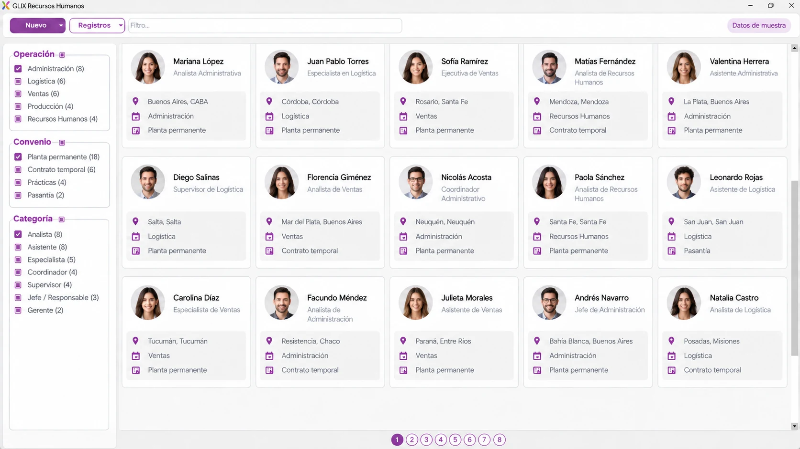

Información centralizada
Los datos del personal reunidos en un mismo lugar para facilitar la gestión cotidiana.


Centralizá la información del personal, asistencias, sueldos y novedades para administrar el día a día de tu equipo desde un mismo sistema.
Hablemos de tu equipoGLIX reúne la información que Recursos Humanos necesita para acompañar la administración diaria de las personas de la empresa.
Personal, asistencias, sueldos, licencias y sanciones comparten un mismo entorno.

Centralizá la información administrativa del personal para consultar cada caso con mayor claridad y mantener los datos del equipo dentro del mismo entorno.
Los datos del personal reunidos en un mismo lugar para facilitar la gestión cotidiana.
Consultá la información relacionada con cada persona sin depender de datos dispersos.
Integrá las asistencias a la información del personal para tener una visión más completa de la actividad cotidiana del equipo.
Mantené organizada la información de presencia del personal dentro del mismo módulo.
Relacioná la asistencia con las demás novedades administrativas de cada persona.
Gestioná la información vinculada a los sueldos junto con los demás datos administrativos del personal.
Organizá la información de remuneraciones dentro del área de Recursos Humanos.
Mantené la información salarial integrada al resto de la administración de cada persona.
Licencias y sanciones se integran a la información de cada persona para mantener una administración más ordenada del equipo.
Organizá las licencias del personal y mantenelas relacionadas con la información de cada persona.
Registrá las sanciones dentro del mismo entorno para conservar el seguimiento administrativo correspondiente.
GLIX reúne personal, asistencias, sueldos, licencias y sanciones para que Recursos Humanos pueda trabajar con la información del equipo en un mismo sistema.
Contanos qué querés mejorar. Te ayudamos a descubrir cómo GLIX puede conectar y simplificar tu operación.
¿Preferís hablar por WhatsApp?Completá el formulario y conversemos sobre tu empresa.
Tu consulta fue enviada. El equipo de GLIX te responderá por email.